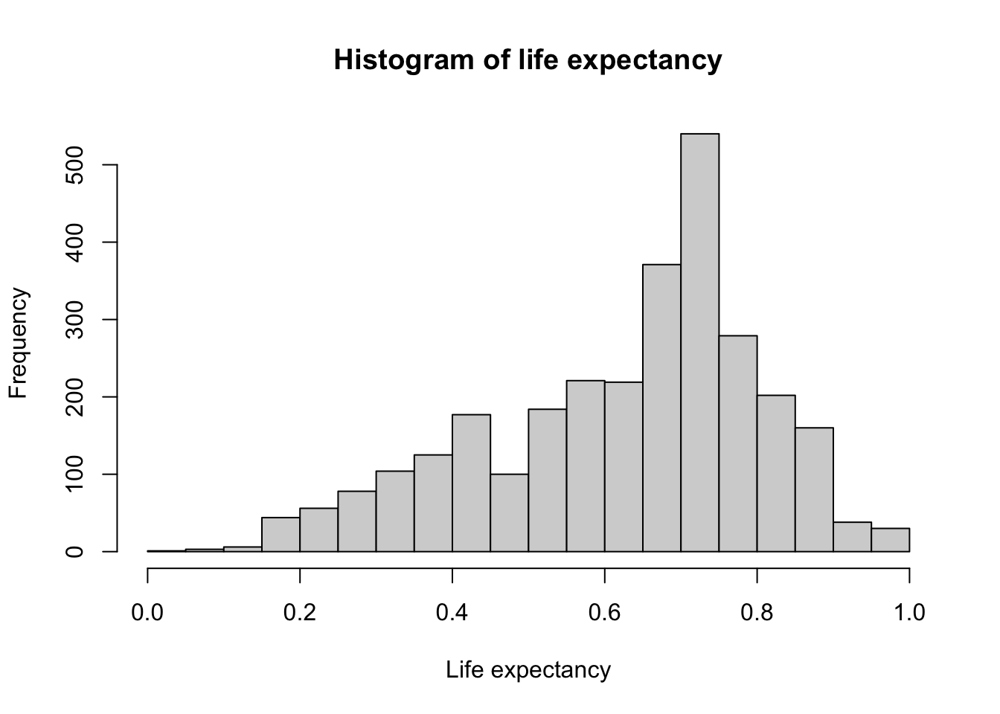
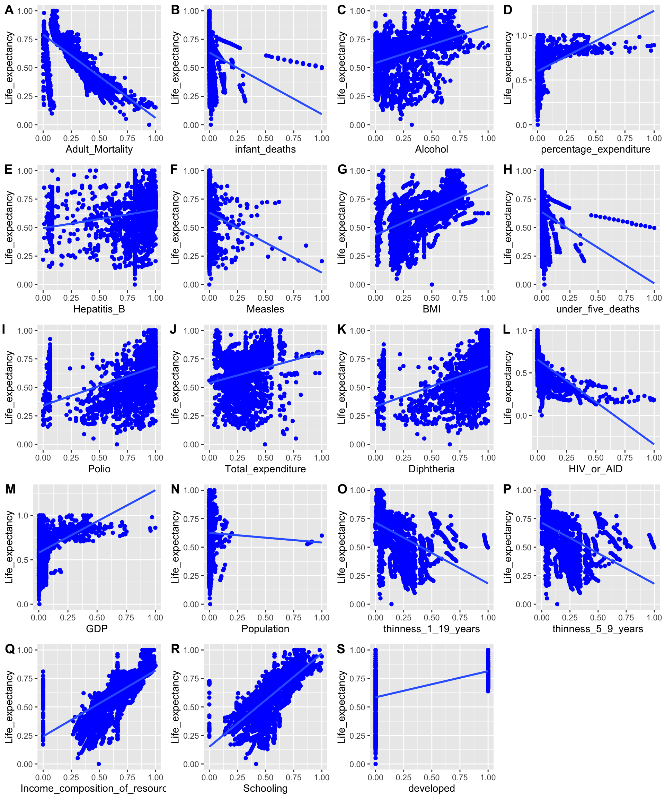

A person’s life expectancy is a statistical measure of the average time is expected to live, based on several factors such as birth, age, and other demographic factors. Indeed, the United Nations estimates a global average life expectancy of 72.6 years for 2019 – which is higher than in any country back in 1950. Therefore, I am interested to find the factor(s) contributing to the increase in life expectancy using predictive model.
The data was from Kaggle https://www.kaggle.com/kumarajarshi/life-expectancy-who. The data contains information related to life expectancy, health, economic and other factors for 193 countries from year 2000 to 2015. The original data related to life expectancy, health factors for 193 countries have been collected from WHO data repository website and its corresponding economic data was collected from United Nation website.
First, we need to import the data-set. The data-set consists of 22 columns and 2938 rows.
The following table shows all factors and their corresponding missing values count and percentage:
| Factors | missing (count) | missing (%) |
|---|---|---|
| Country | 0 | 0.000 |
| Year | 0 | 0.000 |
| Status | 0 | 0.000 |
| Life expectancy | 10 | 0.340 |
| Adult Mortality | 10 | 0.340 |
| infant deaths | 0 | 0.000 |
| Alcohol | 194 | 6.603 |
| percentage expenditure | 0 | 0.000 |
| Hepatitis B | 553 | 18.822 |
| Measles | 0 | 0.000 |
| BMI | 34 | 1.157 |
| under-five deaths | 0 | 0.000 |
| Polio | 19 | 0.647 |
| Total expenditure | 226 | 7.692 |
| Diphtheria | 19 | 0.647 |
| HIV/AIDS | 0 | 0.000 |
| GDP | 448 | 15.248 |
| Population | 652 | 22.192 |
| thinness 1-19 years | 34 | 1.157 |
| thinness 5-9 years | 34 | 1.157 |
| Income composition of resources | 167 | 5.684 |
| Schooling | 163 | 5.548 |
From the above table, most of the columns have missing values. We also observed that some columns have naming issues. We will rename all the columns by removing white spaces and replace missing values with mean value.
| Factors | missing (count) |
|---|---|
| Country | 0 |
| Year | 0 |
| Status | 0 |
| Life_expectancy | 0 |
| Adult_Mortality | 0 |
| infant_deaths | 0 |
| Alcohol | 0 |
| percentage_expenditure | 0 |
| Hepatitis_B | 0 |
| Measles | 0 |
| BMI | 0 |
| under_five_deaths | 0 |
| Polio | 0 |
| Total_expenditure | 0 |
| Diphtheria | 0 |
| HIV_or_AID | 0 |
| GDP | 0 |
| Population | 0 |
| thinness_1_19_years | 0 |
| thinness_5_9_years | 0 |
| Income_composition_of_resources | 0 |
| Schooling | 0 |
Looking closer into every factor, the factor Status is the country status according to WHO standards, Developed or Developing, which is non-numerical. We will transform it into a new binary numerical variable called developed, so that developed country is 1 and developing country is 0.
Also, we need to perform data normalization for each numeric columns in the dataset to a common scale, without distorting differences in the ranges of values, therefore, we will choose min-max normalization technique to do so:
\[\text{Min-Max Normalization = } \frac{(X-min(X))}{(max(X) - min(X))}\]
Since we are interested in life expectancy, we will check the distribution of it. Below is the histogram of life expectancy, and it is normally distributed and thus fitting a linear regression is appropriate.

There are also interactive histograms for every factor, please check the visualization on the website.
Now, lets visualize the distribution of life expectancy against all variables.

There are also interactive scatter plots that correspond to the above section, please check the visualization on the website.
From the above scatter plots, we can quickly tell that factors Measles, under_five_deaths, Polio and Population have no significant linear relationship with life expectancy. We will double check that by fitting a linear model for each variable with life expectancy.
| Variable | Adjusted R Squared |
|---|---|
| Adult_Mortality | 0.4847 |
| infant_deaths | 0.03827 |
| Alcohol | 0.1531 |
| percentage_expenditure | 0.1455 |
| Hepatitis_B | 0.0412 |
| Measles | 0.0245 |
| BMI | 0.3125 |
| under_five_deaths | 0.04918 |
| Polio | 0.2128 |
| Total_expenditure | 0.04293 |
| Diphtheria | 0.2258 |
| HIV_or_AID | 0.3094 |
| GDP | 0.185 |
| Population | 4.55e-05 |
| thinness_1_19_years | 0.2227 |
| thinness_5_9_years | 0.2175 |
| Income_composition_of_resources | 0.4793 |
| Schooling | 0.5111 |
| developed | 0.232 |
The above table shows the adjusted R squared for the linear model, and we will only consider the factors with adjusted R squared higher than 0.15. Therefore, we will drop factors infant_deaths, Alcohol, percentage_expenditure, Hepatitis_B, Measles, under_five_deaths, Total_expenditure, GDP and Population.
After dropping factors not required, we fit a linear regression using the rest of factors. The table below shows the summary table of each factor, and it can be seen that the p-values for factors thinness_1_19_years and thinness_5_9_years are considerable large, meaning that these two factors are not significant in this linear regression.
| Characteristic | Beta | 95% CI1 | p-value |
|---|---|---|---|
| Adult_Mortality | -0.28 | -0.30, -0.26 | <0.001 |
| BMI | 0.08 | 0.06, 0.09 | <0.001 |
| Polio | 0.06 | 0.04, 0.07 | <0.001 |
| Diphtheria | 0.08 | 0.06, 0.09 | <0.001 |
| HIV_or_AID | -0.45 | -0.49, -0.42 | <0.001 |
| thinness_1_19_years | -0.06 | -0.11, -0.01 | 0.027 |
| thinness_5_9_years | 0.01 | -0.05, 0.06 | 0.8 |
| Income_composition_of_resources | 0.12 | 0.10, 0.15 | <0.001 |
| Schooling | 0.28 | 0.25, 0.31 | <0.001 |
| developed | 0.04 | 0.03, 0.05 | <0.001 |
| 1 CI = Confidence Interval | |||
Therefore, we will drop factors thinness_1_19_years and thinness_5_9_years and construct a new linear regression.
| Characteristic | Beta | 95% CI1 | p-value |
|---|---|---|---|
| Adult_Mortality | -0.28 | -0.30, -0.26 | <0.001 |
| BMI | 0.09 | 0.08, 0.11 | <0.001 |
| Polio | 0.06 | 0.04, 0.07 | <0.001 |
| Diphtheria | 0.08 | 0.06, 0.09 | <0.001 |
| HIV_or_AID | -0.46 | -0.49, -0.42 | <0.001 |
| Income_composition_of_resources | 0.12 | 0.10, 0.15 | <0.001 |
| Schooling | 0.29 | 0.25, 0.32 | <0.001 |
| developed | 0.04 | 0.04, 0.05 | <0.001 |
| 1 CI = Confidence Interval | |||
In order to evaluate our model, we will split the dataset into training and testing set into 75% of training data and 25% of testing data. The mean squared error of testing set is 0.0061, which is quite small, we can conclude that the model is considerably appropriate.
In conclusion, from the linear regression model, in order to increase the life expectancy, we should increase the vaccination coverage of Polio and Diphtheria. Also, reduce the risks of adult mortality and HIV/AIDS. Measures should be taken to provide better education, country development and health care.